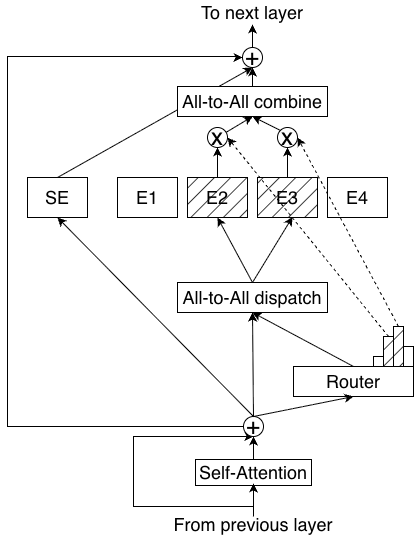
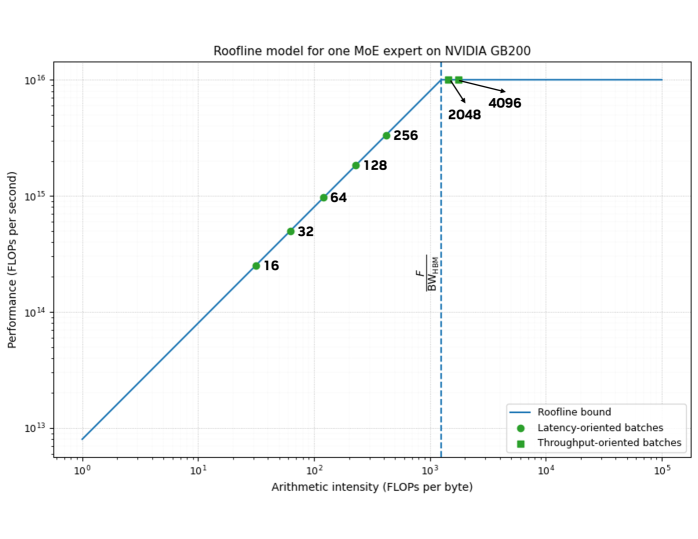
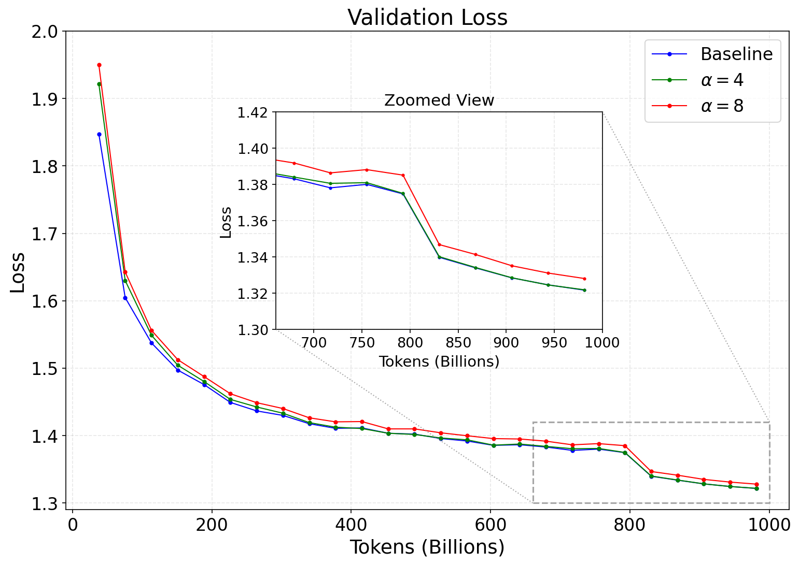
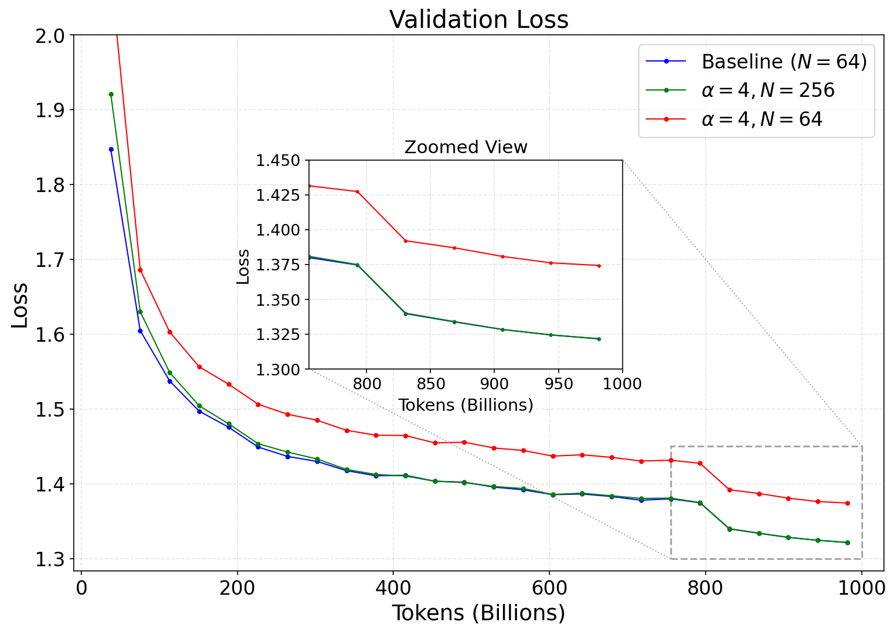

LatentMoE 的出发点是对当前 MoE 系统瓶颈的深入分析。论文首先指出，评估 MoE 效率不能只看每 FLOP 精度——计算效率只是硬币的一面。另一面是每参数精度：模型参数越多，加载权重的内存带宽需求越大，专家路由的 all-to-all 通信量也越大，这些才是实际部署中的主导瓶颈。
以 Qwen3-235B-A22B 在 NVIDIA GB200 NVL72 上部署为例。论文通过屋顶线分析发现，在小批量推理时，每专家处理的 token 数通常只有几百个，远低于 1418 的计算约束阈值。这意味着 MoE 专家完全运行在内存带宽受限区域——GPU 算力闲着，瓶颈在于从 HBM 加载权重的速度。
低延迟服务中，提升精度的关键是最大化「每参数精度」——即用更少的参数干更多的事，因为每次推理都需要把所有权重从 HBM 搬到计算单元。
在大批量吞吐场景中，专家计算虽然能填满 GPU，但专家并行带来的 all-to-all 通信成了新的瓶颈。论文用公式推导显示，对于 Qwen3-235B-A22B + GB200 配置，通信时间与计算时间的比例达到约 9:1——MoE 层超过 90% 的时间花在了路由通信上，而非实际计算。
通信量正比于路由隐藏维度 d 和活跃专家数 K，因此缓解通信瓶颈需要降低 d 或 K。
那么，直接减少活跃专家数 K 或中间维度 m 不就行了？论文用 Barron 函数的理论分析指出，MoE 每 token 的有效表达能力正比于 K × m。降低其中任何一个都会直接损害模型质量。
而专家总数 N 只影响组合多样性，不影响推理成本。这就引出了核心设计空间：在没有等价替换的条件下，唯一可以压缩的维度是隐藏维度 d。只要压缩后不低于任务内在特征秩 r_eff，质量就不会大幅下降。

基于上述分析，LatentMoE 的核心设计是：将 token 投影到低维潜在空间 ℓ（ℓ << d）中再进行专家路由和计算，省下来的通信带宽和内存资源，再投资到增加专家数量和路由多样性上。用论文的话说——把 d 的压缩倍数 α = d/ℓ 转化为 N 和 K 的扩展倍数。
LatentMoE 在标准 MoE 的基础上增加了三部分：
- W↓（下投影）：将每个输入 token 从隐藏维度 d 投影到潜在维度 ℓ。此后所有路由和在路由专家内的计算都在 ℓ 空间进行。
- 专家 E_i(·;ℓ)：每个专家的权重矩阵从 ℝ^{m×d} 缩小为 ℝ^{m×ℓ}，参数减少 α 倍。
- W↑（上投影）：专家输出聚合后投影回隐藏维度 d。
论文定义了两个变体：
- ℓ-MoE_eff：压缩 d 后扩展 N，但保持 K 不变 → 推理成本下降，精度与基线相当。
- ℓ-MoE_acc（推荐）：同时扩展 N 和 K（K' = α·K）→ 推理成本与基线相当，但精度显著提升。
关键在于多个设计原则的交汇：
1. 内存带宽不变：专家参数减少 α 倍 → 权重的内存带宽需求同步减少 α 倍。但 ℓ-MoE_acc 将 K 也扩展 α 倍 → 内存带宽总成本不变。
2. 通信量不变：通信量正比于 d × K。压缩 d（÷α）的同时扩展 K（×α）→ 乘积不变。
3. 质量提升：专家组合空间从 (N choose K) 扩展到 (αN choose αK) → 指数级增长。每 token 路由到更多专家，获得更丰富的组合表达。
简单说：LatentMoE 是一笔零和交易——不增加推理成本的前提下，用更高效的参数分配换来了更强的表达力。

论文的实验范围从 16B/2B 活跃的小规模消融，到 95B/8B 活跃的完整 Transformer，再到 73B/8B 活跃的混合 Mamba-Attention MoE，最后通过模拟器投影到万亿参数级别。
实验扫描不同压缩比发现，当 α ≤ 4 时验证损失与基线几乎持平，α=8 时开始显著劣化。所有后续实验统一采用 α=4。

Figure 4 是一个关键消融：同样的 4 倍压缩，如果不扩展专家数（红色曲线），验证损失显著劣化；一旦扩展专家数（绿色曲线），损失又回到基线水平。这说明压缩带来的参数节省必须再投资回专家扩容，否则质量必然受损。

对比两个变体与基线的训练轨迹。ℓ-MoE_acc 以更低的验证损失收敛，且在大规模（95B）和混合架构（Mamba-Attention）上一致复现。在 95B Transformer 上的 MMLU Pro 从基线的 29.2 提升到 34.9，Code 从 40.33 提升到 41.50。
在混合 Mamba-Attention MoE 上，ℓ-MoE_acc 同样全面胜出：MMLU Pro 48.30 → 52.87，Math 78.32 → 80.19。
最令人印象深刻的是万亿参数规模的投影分析。论文使用有效参数乘子（EPM）方法估算：Kimi-K2-1T-LatentMoE 的 λ ≈ 1.35×，即 1T 参数的 LatentMoE 精度等价于约 1.35T 参数的标准 MoE。
这意味着要达到同等精度，标准 MoE 需要额外 350B 参数。对应帕累托前沿投影，这带来了 1.24×–3.46× 的推理减速——延迟越低（越交互），差距越大。

LatentMoE 与 MoLAE 表面相似（都用潜在空间），但本质不同。MoLAE 是后训练压缩——只压缩部分专家（FC2），保留了 d 维的 token 分发通信；LatentMoE 则是在训练时就设计为在潜在空间计算，并将所有节省重新投资到表达能力上。
与 mHC（流形约束超连接）互补——mHC 修改残差连接，LatentMoE 修改专家路径，理论上可以堆叠使用。
参考：https://arxiv.org/html/2601.18089v1